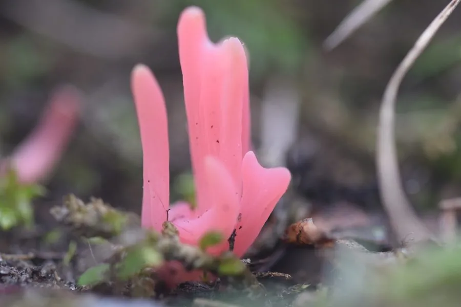

真菌 · 真菌界
红珊瑚菌 Clavaria rosea

红珊瑚菌的子实体呈不分枝的棒状，粉红色至玫瑰红色，顶端圆钝，常成小片生于林下苔藓间，形态像一支支小珊瑚。
- 分类
- 门担子菌门纲伞菌纲目伞菌目科珊瑚菌科属珊瑚菌属
- 栖息环境
- 阔叶林与针叶林的苔藓层、腐殖质土壤，夏秋季群生
- 地理分布
- 温带地区分布，中国北方与西南林区有记录
- 保护级别
- 暂无评估（IUCN 未评估，中国未列入重点保护名录）
物种志
红珊瑚菌是担子菌门珊瑚菌科的真菌，子实体呈细长的棒状或纺锤状，不分枝，高 2–5 cm，粗 2–4 mm，顶端圆钝或稍尖，表面光滑。颜色为玫瑰红色、粉红色至淡红色，基部颜色较浅，成熟后逐渐褪为淡粉色。菌肉白色、柔软，孢子印白色。它的形态介于菌丝束和小型珊瑚之间，没有菌盖、菌褶和菌柄的分化。
红珊瑚菌生于阔叶林和针叶林的苔藓层、腐殖质土壤上，夏秋季单生或群生，常成小片出现，在温带地区分布，中国北方和西南林区有记录。它靠分解土壤中的有机质生活，是林地中的腐生真菌。红珊瑚菌颜色鲜艳、形态独特，是自然观察中辨识度较高的小型真菌；但它质地脆嫩、产量很少，没有食用价值，部分珊瑚菌近缘种还有轻微毒性，因此不建议采食。
形态与习性
- 子实体棒状，不分枝，高 2–5 cm
- 颜色玫瑰红至粉红色，基部较浅
- 顶端圆钝或稍尖
- 孢子印白色
- 生境林下苔藓层与腐殖质土壤
- 食用性无食用价值，不建议采食
- 习性腐生，分解土壤有机质
趣味知识
- 红珊瑚菌不分枝，只是一根根粉红色的小棒，像插在苔藓里的珊瑚。
- 它颜色鲜艳但质地脆嫩、产量少，没有食用价值。
- 珊瑚菌类中有不少近缘种带轻微毒性，野外不要随意采食。
- 红珊瑚菌常在林下苔藓间成小片出现，夏秋季最容易找到。